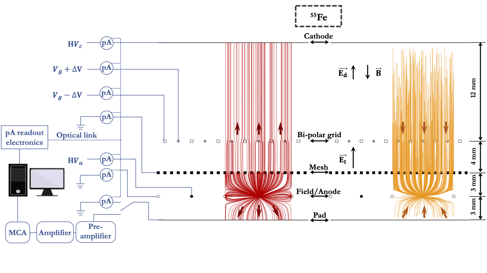
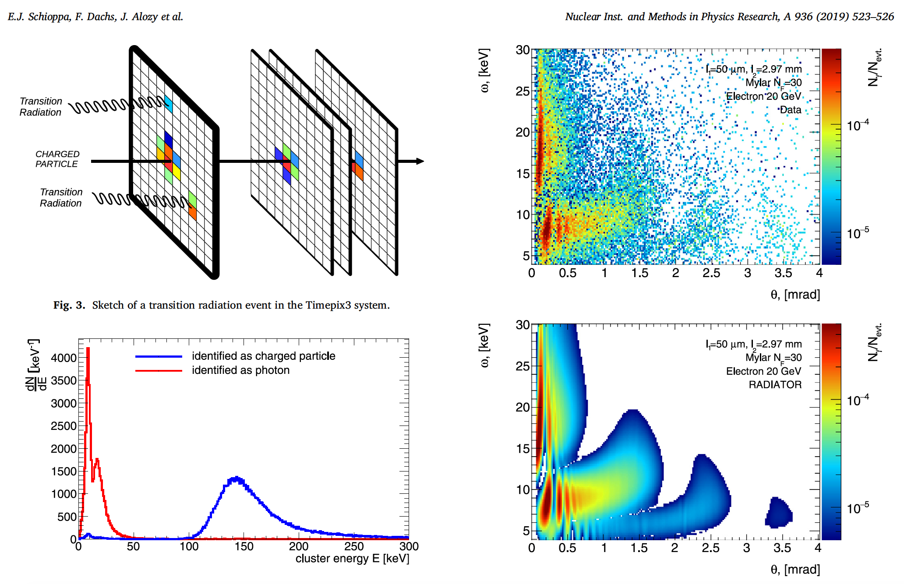
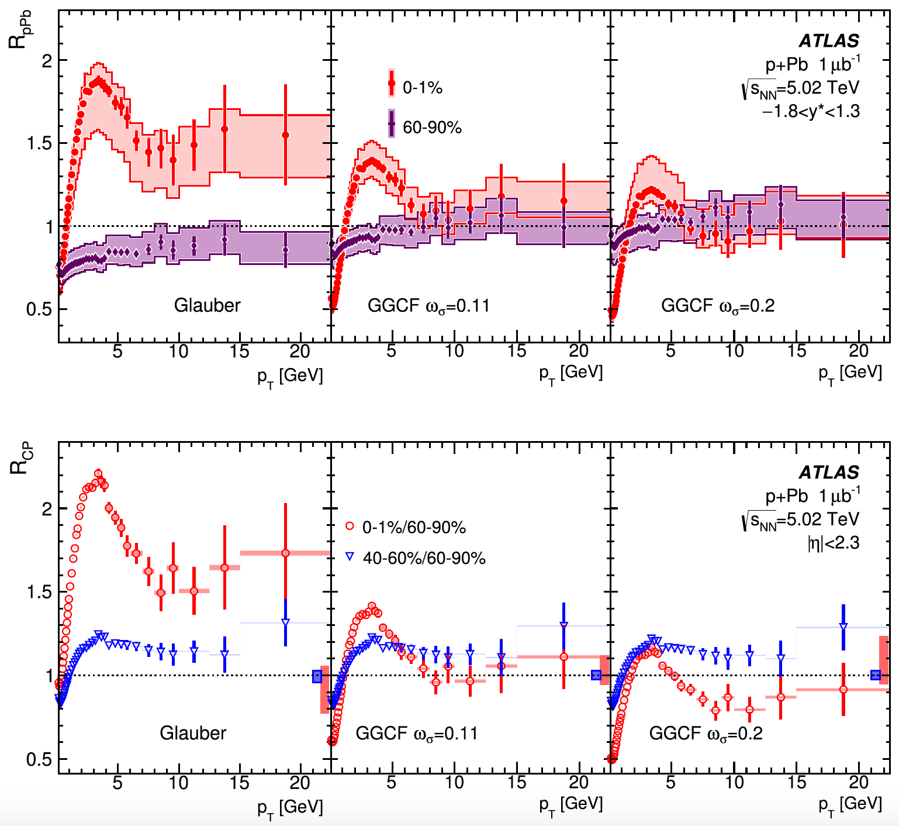
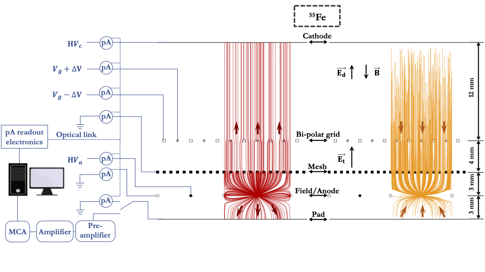
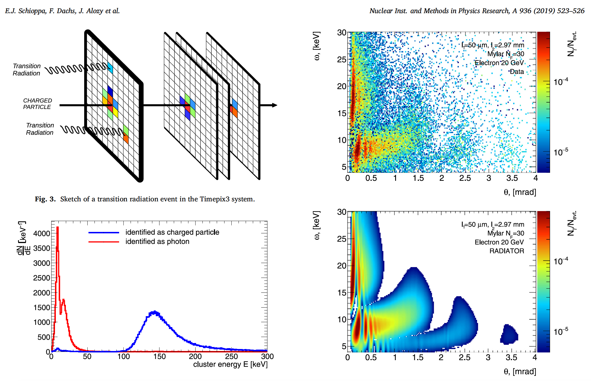
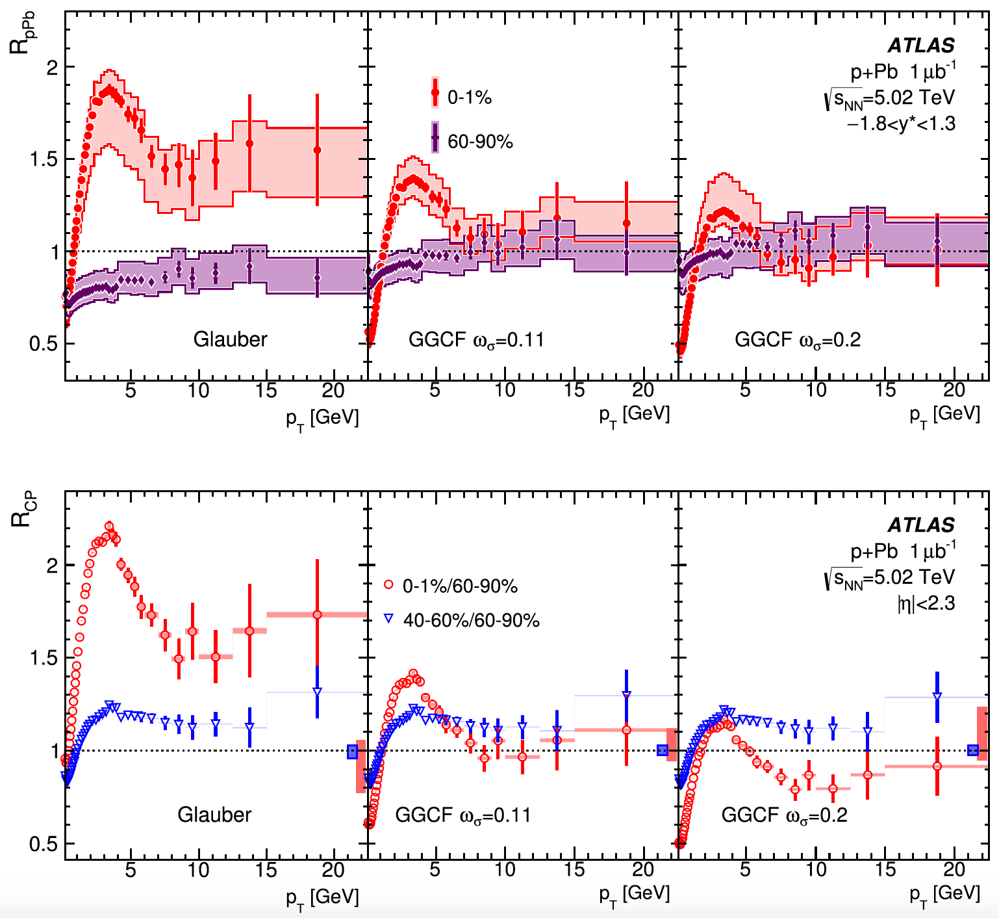

Evgeny Shulga
Email: shulgaevgeny@gmail.com
I am an experienced researcher with a vast background in data analysis, physics-based simulations and detector development.
I am self-motivated, fast learning, and adaptive to a new environment.
In my current job, I am leading the R&D work in the detector laboratory and work on the software for a new experiment calibration.
- 2010 - 2018
-
Graduate student at the National Research Nuclear University MEPhI, Moscow, Russia (NRNU MEPhI)
Ph.D. in Physics of Atomic Nucleus and Elementary Particles: “Charged particle spectra and nuclear modification factors in proton-nucleus (p+208Pb) interactions at an energy of 5.02 TeV per pair of nucleons in the ATLAS experiment at the LHC” under the supervision of Dr. A. Romaniouk, defended 19.03.2018.
- 2004 - 2010
-
Undergraduate student at NRNU MEPhI
Diploma equivalent to the M.S. in Atomic Nucleus and Particle Physics: “Study of the four-lepton decay of the Higgs boson by Monte Carlo simulations in the ATLAS experiment at the initial LHC energies” under the supervision of L.R. Flores Castillo (University of Wisconsin), NRNU MEPhI internal supervision of S. Smirnov, defended 01.05.2010.
- 1994 - 2004
-
High school student at “Lyceum” № 1523, and high school № 1640, Moscow, Russia
- 2018 – Present
-
Postdoctoral Researcher at Weizmann Institute of Science
Development of the multi-layer gas electron multipliers (GEMs) for the sPHENIX TPC with the reduced Ion Back Flow; Analysis of experimental data for TPC prototype experiment: charge sharing studies; Member of the sPHENIX calibration taskforce, aiming to collect and define the calibration strategy (procedures to check/tune detector performance) for all detector subsystems
- 2010 – 2016
-
Research staff member at NRNU MEPhI
Development of the transition radiation detectors; Maintenance and calibration of the Transition Radiation Tracker of the ATLAS detector; Analysis of experimental data; Participation in small-scale scientific projects at the laboratory at NRNU MEPhI; Administrative work.
- 2015 – 2018
-
Teaching Assistant at NRNU MEPhI
- Lectures and classes on “Selected chapters of nuclear physics”;
- Students supervision: bachelors 2, master 1
- 2018 – Present
-
sPHENIX experiment at the RHIC facility at BNL
Development of the multi-layer GEMs for the sPHENIX TPC with the reduced Ion Back Flow; Simulation studies of the spacecharge in the TPC
- 2009 – 2020
-
ATLAS experiment at the LHC CERN
Transition Radiation Tracker (TRT) performance studies: software development, detector performance optimization; Preparation for the TRT test beams at the SPS (2012, 2016, 2017, 2018); Research for the Heavy Ion working group: data validation, physics data analysis
- Teamwork
-
I have vast experience working in the research teams of only a few people and of dozens of scientists, engineers, and technicians. I greatly value good relations at work and do my best to prevent conflicting situations.
- Communication
-
Working at the university and in the large international collaboration, like ATLAS, requires good communication skills that I fully possess. In the past years, I actively participated in hundreds of planned and ad-hoc meetings of all different levels: from very technical day-by-day discussion to the meeting with the NRNU MEPhI and ATLAS management.
- Computer
-
Scientific Computing: C++, Matlab, Python, PyTorch, OpenCV
Platforms: UNIX, MS Windows
Linux Frameworks: Root, Garfield++, FreeCAD, LaTeX, MS Office - Languages
-
Russian: native
English: fluent
Hebrew: beginner
EDUCATION
WORK EXPERIENCE
TEACHING EXPERIENCE
INTERNATIONAL COLLABORATIONS
PUBLICATIONS
Publications in refereed journals with my significant contribution:
Google scholar.
Highlights:`


2016-2018
First measurements of the spectral and angular distribution of transition radiation using a silicon pixel sensor on a Timepix3 chip

2012-2016
Transverse momentum, rapidity, and centrality dependence of inclusive charged-particle production in sqrt(s_NN)=5.02 TeV p + Pb collisions measured by the ATLAS experiment
SKILLS


2016-2018
First measurements of the spectral and angular distribution of transition radiation using a silicon pixel sensor on a Timepix3 chip
